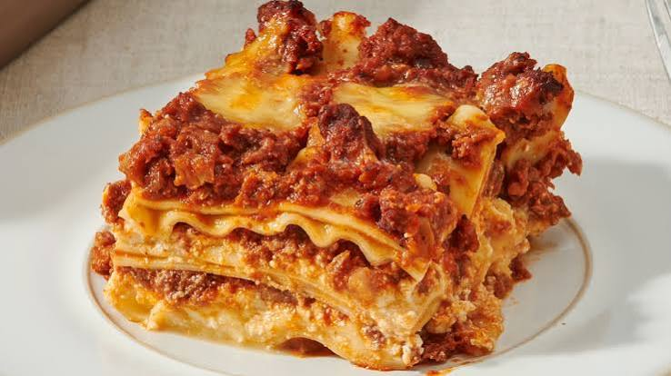

Lasagne Recipe

Description
Lasagna, also known by the plural form lasagne, is a type of pasta made in wide, flat sheets. It originates in Italian cuisine, where it is served in a number of ways, but is most often served as a casserole made by stacked layers of pasta, alternating with fillings that could consist of meat, dairy, vegetables, and sauces. Typically, cooked pasta is assembled with the aforementioned fillings, topped with grated cheese, and then baked in an oven (al forno). Regional variations of this are found across Italy, along with Americanized versions worldwide.
Ingredients
- Ground beef
- Marinara sauce
- Cheese
- Regular lasagna noodles
Steps
- Brown the beef and onion. Cook, breaking the beef up into small pieces with a wooden spoon, until the beef is cooked through.
- Prepare the baking dish and assemble the meat sauce. Spread a thin layer of marinara sauce in the bottom of a 9x13-inch baking dish. Stir the remaining sauce into the ground beef mixture.
- Layer the lasagna. Place 5 lasagna noodles in the baking dish, breaking them if needed to create a single layer. Dollop and spread 1 cup of the ricotta cheese over the noodles. Dollop and spread about 1 1/2 cups of the meat sauce on the ricotta, then sprinkle with 1 cup of the mozzarella. Continue layering the lasagna. Top with a final layer of 5 noodles and the remaining sauce, spreading the sauce thin so that it almost completely covers the noodles. Cover the dish tightly with aluminum foil.
- Bake the lasagna. Check after 1 hour to make sure the noodles are done by poking the lasagna with a knife; the knife should slide easily through all the layers.
- Sprinkle with the remaining mozzarella and finish baking. Uncover the lasagna and sprinkle with the remaining mozzarella. Bake uncovered until the mozzarella is melted and lightly browned, and the sauce is bubbling.
- Cool the lasagna. Let the lasagna cool on a wire rack for a few minutes before serving.
Navigation